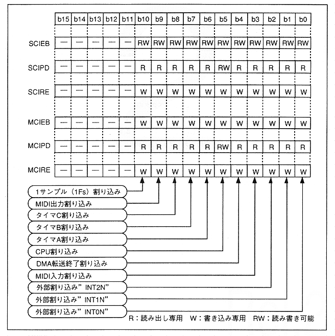

Interrupt request reset flag to the main CPU. The hardware interrupt request for the corresponding bit is reset when the bit is set to “1” (for the bit where the interrupt is generated, “MCIPD” is set by setting “1B” to “MCIRE” corresponding to the bit. Will also change from "1B" to "0B").
Figure 4.63 Interrupt register bit support
